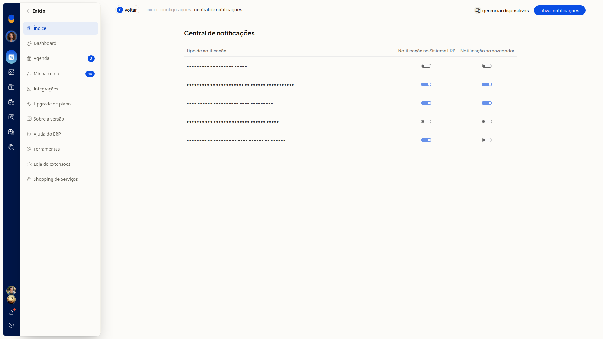
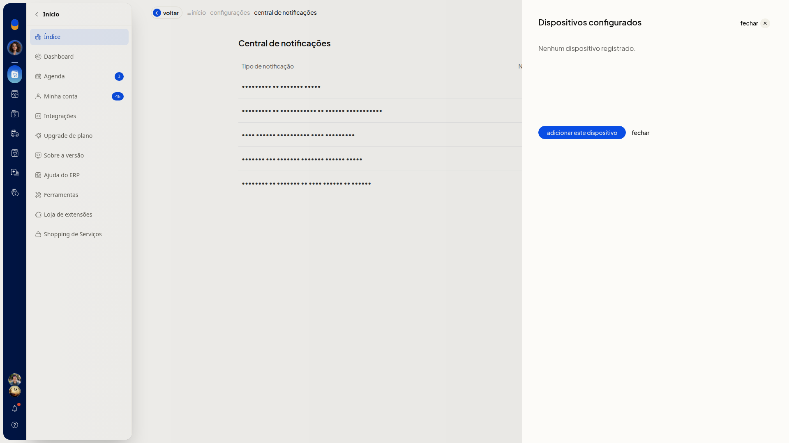
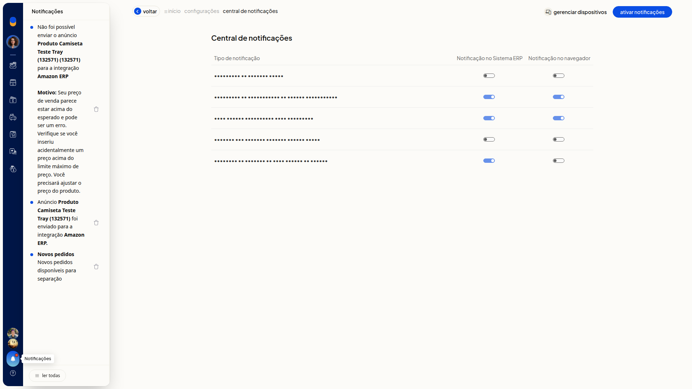

Central de notificações
Importante
- A tabela de tipos de aviso é fixa. Não há formulário nem botão para cadastrar um novo tipo.
- A Central de notificações só abre quando existe ao menos um tipo de notificação disponível para configuração.
- Se um tipo de aviso não aparecer para você, peça acesso ao administrador da conta.
- O botão ativar notificações só aparece em navegadores com suporte a notificações e quando este navegador ainda não está configurado para receber notificações.
- Para ativar as notificações, o navegador precisa autorizar o envio de notificações.
- gerenciar dispositivos só aparece em navegadores com suporte a notificações.
- Ao marcar a notificação no navegador sem nenhum dispositivo configurado, é preciso adicionar um dispositivo.
Instruções
-
Acesse Configurações > Configurações ERP.
-
Na tela Configurações do Sistema ERP, clique na aba Geral.
-
Em Outras configurações, clique em Central de notificações.

-
Confira as colunas Tipo de notificação, Notificação no Sistema ERP e Notificação no navegador. Cada tipo tem um interruptor em cada coluna. Nenhum interruptor é obrigatório.
-
Perguntas do Mercado Livre
-
Problemas no faturamento do Amazon FulFillment
-
Novo pedido disponível para separação
-
Pedidos com entrega Mercado Envios Agora
-
Bloqueio de emissão de nota fiscal na Amazon

-
Use o interruptor da coluna Notificação no Sistema ERP para definir se você recebe o aviso no Sistema ERP.
-
Use o interruptor da coluna Notificação no navegador para definir se você recebe o aviso no navegador. Se você marcar a notificação no navegador sem nenhum dispositivo configurado, adicione um dispositivo.
-
Clique em ativar notificações, se o botão aparecer, e autorize o envio de notificações no navegador.
-
Clique em gerenciar dispositivos.
-
No painel Dispositivos configurados, confira a lista ou a mensagem Nenhum dispositivo registrado.

-
Clique em Adicionar este dispositivo para configurar este navegador. Para voltar à tabela sem adicionar, clique em Fechar.
-
Clique em Notificações na barra superior.
-
Leia os avisos recebidos no painel Notificações. A tela mostra ler todas e, em cada aviso, Excluir notificação. Você vê os avisos já recebidos no ERP.

Resultado
A Central de notificações mostra a tabela de tipos de aviso, com um interruptor em Notificação no Sistema ERP e outro em Notificação no navegador. Em Dispositivos configurados, você confere se há dispositivo registrado para a notificação no navegador.